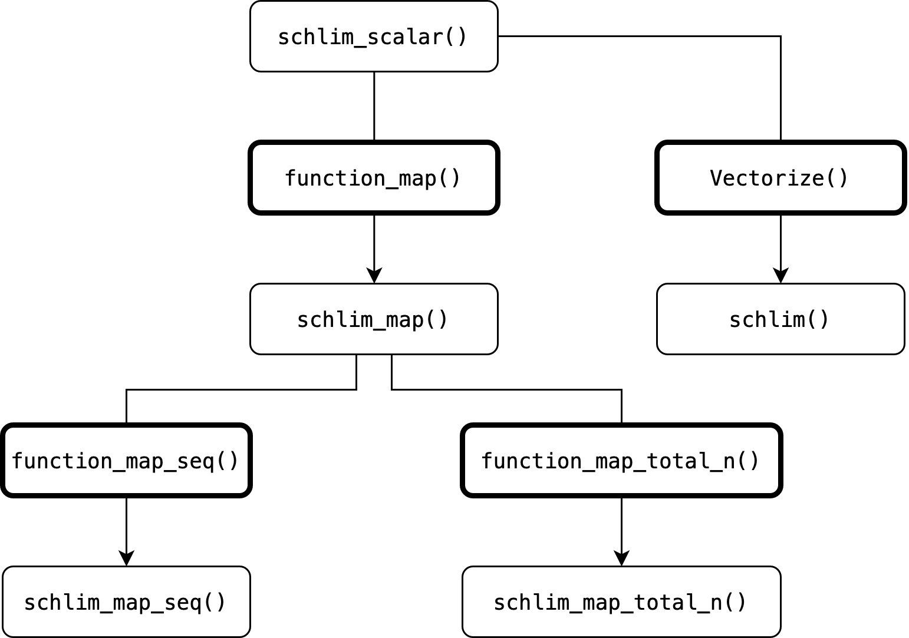

Consistency tests in depth
Source:vignettes/consistency-tests-in-depth.Rmd
consistency-tests-in-depth.RmdIntroduction
This vignette describes scrutiny’s infrastructure for implementing new consistency tests.
A consistency test is implemented at several levels, most of them
created from the previous one by a function factory. Since the factories
work the same way for every test, all test functions share one
interface: anyone who knows the grim_*() functions can use
the grimmer_*() functions as well.
These are the levels, with GRIM as the example. If you implement a valid consistency test at least at the first level, I’ll be happy to accept a pull request to scrutiny.
A non-exported function that tests a single case, such as
grim_scalar().A vectorized version of it, such as
grim().A mapper that applies the single-case function to each row of a data frame, such as
grim_map().An
audit()method that summarizes the output of number 3, and anexplain_map()method that explains it.A function that plots the output of number 3, such as
grim_plot_grid().A sequence mapper that tests slightly varied input values, such as
grim_map_seq().A total-n mapper for studies with two groups that only report the total sample size, such as
grim_map_total_n().
The examples use a mock test called SCHLIM, which has no meaning in itself. A real implementation will usually be more complex than the snippets below.
Please follow the tidyverse style guide and the conventions below. To write a new package, see R Packages (Wickham and Bryan 2023).
1. Single-case
This function contains the test itself. It is not exported, but every other level builds on it.
It takes one value for each statistic that is tested for consistency
with the others. It returns TRUE if they are consistent,
FALSE if they aren’t, and NA if the case can’t
be decided, as with a missing value. In scrutiny’s own tests, a missing
value only makes the result NA if some value in its place
would make the case consistent and another would not; see Missing
values in vignette("technical-notes").
schlim_scalar <- function(y, n) {
(y / 3) > n
}
schlim_scalar(y = 30, n = 4)
#> [1] TRUE
schlim_scalar(y = 2, n = 7)
#> [1] FALSEIf the test reconstructs rounded numbers, give the function a
rounding argument with the default
"up_or_down", and pass it on to
roundwork::reround() or roundwork::unround();
see vignette("rounding-in-depth", package = "roundwork").
To compare the range of a rounded value with whole numbers, as GRIM
does, use roundwork::bound_numerators() or
roundwork::sum_range(), which keep the comparison exact;
see Exact arithmetic in
vignette("technical-notes"). Take the number of decimal
places as an argument without a default, like digits_x in
grim(), rather than counting them: a numeric value has lost
any trailing zeros.
decimal_places() counts the digits after the decimal
point or another separator. It takes numbers and strings, and it is
vectorized:
decimal_places("2.80")
#> [1] 2
decimal_places(c(55.1, 6.493, 8))
#> [1] 1 3 0Numeric values drop trailing zeros, whereas strings preserve them. This is why the consistency tests take the number of decimal places as an argument rather than counting it:
decimal_places(7.200)
#> [1] 1
decimal_places("7.200")
#> [1] 3Name the function after the test in lowercase, followed by
_scalar. If R’s own vectorization already makes it work on
vectors in every argument, leave out _scalar, export it,
and skip section 2.
Exported scrutiny functions often call internal helpers, most of
which are documented in utils.R.
To reuse one, copy its source code, which
scrutiny:::helper_name (without parentheses) prints. Don’t
call it with ::: in your code: internals can change or
vanish without notice. See this
blogpost by Thomas Lin Pedersen.
2. Vectorized
The simplest way to vectorize the single-case function is
Vectorize(). The result is named after the test:
schlim <- Vectorize(schlim_scalar)
schlim(y = 10:15, n = 4)
#> [1] FALSE FALSE FALSE TRUE TRUE TRUEVectorize() loops over every argument. This is wrong for
two kinds of arguments: those that only the mapper should set, such as
show_rec in grim_scalar(), which makes the
function return a list; and those that describe the test as a whole,
such as rounding. This is why grim(),
grimmer(), and debit() have handwritten
signatures instead. If your single-case function has such arguments, do
the same: loop over the reported values only, and pass the other
arguments on as they are. Suppose schlim_scalar() took a
rounding argument:
schlim <- function(y, n, rounding = "up_or_down") {
purrr::map2_lgl(y, n, schlim_scalar, rounding = rounding)
}purrr::map2_lgl() recycles only values of length 1, so
y and n must otherwise have the same length.
Use purrr::pmap_lgl() for three or more reported
values.
The rest of the vignette builds on the mapper, not on the vectorized function.
3. Basic mapper
Creating basic mappers with function_map()
A mapper applies the test to every row of a data frame, as
grim_map() does. Every function in the rest of the vignette
builds on it. It accepts any data frame and returns a tibble.
Create mappers with function_map():
schlim_map <- function_map(
.fn = schlim_scalar,
.reported = c("y", "n"),
.name_test = "SCHLIM"
)
# Example data:
df1 <- tibble::tibble(y = 16:25, n = 3:12)
schlim_map(df1)
#> # A tibble: 10 × 3
#> y n consistency
#> <int> <int> <lgl>
#> 1 16 3 TRUE
#> 2 17 4 TRUE
#> 3 18 5 TRUE
#> 4 19 6 TRUE
#> 5 20 7 FALSE
#> 6 21 8 FALSE
#> 7 22 9 FALSE
#> 8 23 10 FALSE
#> 9 24 11 FALSE
#> 10 25 12 FALSEThese arguments are required:
.fnis the single-case function from section 1..reportednames the arguments of.fnthat take the reported statistics. These become the key columns.function_map()does not assume any particular number of them: GRIM has two, GRIMMER and DEBIT have three..name_testis the name of the test, used in messages and in the class of the output.
Every other argument of .fn becomes an argument of the
mapper, with the same default. Optional arguments of
function_map() control how some of them are treated:
| Argument | Purpose | Example in scrutiny |
|---|---|---|
.args_by_row |
Arguments that take one value per row, returned as columns | digits_x |
.cols_helper |
Arguments that may also be columns of
data, returned after the key columns if given |
items_averaged |
.args_fixed |
Values always passed to .fn; the mapper
has no argument for them |
list(show_reason = TRUE) in
grimmer_map()
|
.args_disabled |
Arguments of .fn that the mapper should
not have |
|
.col_names |
Names of the columns that a list returned by
.fn unpacks into; the first is the key result |
show_rec = TRUE columns |
.cols_derived |
Vectorized functions that compute further columns from the same columns | list(exp_incon = grim_exp_incon) |
.name_class |
Extra classes for the output | |
.name_key_result |
Name of the result column, "consistency"
by default |
grim_map() itself is made this way:
grim_map <- function_map(
.fn = grim_scalar,
.reported = c("x", "n"),
.name_test = "GRIM",
.args_by_row = "digits_x",
.cols_helper = c("items_averaged", "data_type"),
.col_names = c(
"consistency",
"rec_sum",
"sum_lower",
"sum_upper",
"rec_x_upper",
"rec_x_lower"
),
# Not returned by `grim_scalar()`, which would change what `grim()` returns:
.cols_derived = list(exp_incon = grim_exp_incon)
)The output has the key columns first, then any helper columns that
were given, any columns of .args_by_row arguments, and
consistency. Other columns of data follow it.
Functions built on the mapper, such as function_map_seq(),
read the columns left of consistency as the input to the
test. The arguments of a call that apply to all rows, such as
rounding, are recorded on the output; see
scrutiny_meta().
Context and export
function_map() takes the place of
function(): it is a function factory, or more precisely a
function
operator (Wickham 2019), like
Vectorize().
To export a function made this way from your own package, follow this purrr FAQ, with scrutiny in the role of purrr:
schlim_map <- function(...) "dummy"
.onLoad <- function(lib, pkg) {
schlim_map <<- scrutiny::function_map(
.fn = schlim_scalar,
.reported = c("y", "n"),
.name_test = "SCHLIM"
)
}Identifying columns
Factory-made functions have one argument for each
.reported value. If the columns of data have
other names, specify these names via the arguments:
df2 <- df1
names(df2) <- c("foo", "bar")
schlim_map(df2, y = foo, n = bar)
#> # A tibble: 10 × 3
#> y n consistency
#> <int> <int> <lgl>
#> 1 16 3 TRUE
#> 2 17 4 TRUE
#> 3 18 5 TRUE
#> 4 19 6 TRUE
#> 5 20 7 FALSE
#> 6 21 8 FALSE
#> 7 22 9 FALSE
#> 8 23 10 FALSE
#> 9 24 11 FALSE
#> 10 25 12 FALSEA key column that is neither present in data nor
identified via an argument is an error:
schlim_map(df2, y = foo)
#> Error in `schlim_map()`:
#> ! Column `n` is missing from `data`.
#> ✖ It should be a column of the input data frame.
#> ℹ Alternatively, specify the `n` argument of `schlim_map()` as the name of the
#> equivalent column.
# With a wrong identification:
schlim_map(df2, n = mike)
#> Error in `schlim_map()`:
#> ! `mike` is not a column name of `data`.
#> ✖ The `n` argument of `schlim_map()` was specified as `mike`, but there is no
#> column in `data` called `mike`.A variable number of key columns
Some tests don’t have a fixed set of key columns. Think of a test that checks whether the values in any number of columns add up to the value in another column: how many columns go into each check depends on the data, not on the test.
Write the *_scalar() function so that it takes those
values as a single vector argument, and name that argument in
.reported_variadic:
sum_check_scalar <- function(parts, total, tolerance = 0) {
abs(sum(parts) - total) <= tolerance
}
sum_check_map <- function_map(
.fn = sum_check_scalar,
.reported = "total",
.reported_variadic = "parts",
.name_test = "SUMCHECK"
)The mapper then has a parts argument that selects
columns using tidyselect
syntax, alongside the ordinary total key argument:
df3 <- tibble::tibble(
item_1 = c(10, 20, 30),
item_2 = c(5, 5, 5),
item_3 = c(1, 2, 3),
total = c(16, 27, 40)
)
sum_check_map(df3, parts = c(item_1, item_2, item_3))
#> # A tibble: 3 × 5
#> item_1 item_2 item_3 total consistency
#> <dbl> <dbl> <dbl> <dbl> <lgl>
#> 1 10 5 1 16 TRUE
#> 2 20 5 2 27 TRUE
#> 3 30 5 3 40 FALSE
sum_check_map(df3, parts = starts_with("item"), tolerance = 3)
#> # A tibble: 3 × 5
#> item_1 item_2 item_3 total consistency
#> <dbl> <dbl> <dbl> <dbl> <lgl>
#> 1 10 5 1 16 TRUE
#> 2 20 5 2 27 TRUE
#> 3 30 5 3 40 TRUESome points about this mode:
The selected columns are returned as themselves, so the output is as rectangular as any other mapper’s.
The variadic argument has no default. Selecting all remaining columns by default would quietly draw in columns such as identifiers.
The selection must not be empty or include a key or helper column. So
parts = everything()is an error; writeparts = !totalinstead..reportedmay beNULLif every key column is variadic.Such a mapper cannot be wrapped by
function_map_seq()orfunction_map_total_n(), which derive their arguments from.reported.
add_up_to_map() is made this way; see
vignette("percentages-and-sums").
4. audit() and explain_map() methods
Basics
audit() is an S3 generic that summarizes the output of
scrutiny’s mappers. Every mapper should have an audit()
method, which returns descriptive statistics and nothing else. It
dispatches on the class of the mapper’s output:
df1_tested <- schlim_map(df1)
class(df1_tested)
#> [1] "scrutiny_schlim_map" "tbl_df" "tbl"
#> [4] "data.frame"Like the generic, the method takes data and
.... It returns a tibble with at least these columns:
all_cases, the total number of rows.incon_cases, the number of rows in whichconsistencyisFALSE.emp_incon, the ratio ofincon_casestoall_cases.
Add any other descriptive statistics that suit the test, such as
means of output columns. All existing methods return a single row.
Summaries by group come from audit()’s .by
argument, which applies the method to each group, so the method itself
needs no grouping.
Practical steps
The method is a function named audit plus a dot and your
class. Call audit_cols_minimal() to create a tibble with
the three required columns, and add further columns with
dplyr::mutate() or similar:
audit.scrutiny_schlim_map <- function(data, ...) {
audit_cols_minimal(data)
}
# This calls our new method:
audit(df1_tested)
#> # A tibble: 1 × 3
#> all_cases incon_cases emp_incon
#> <int> <int> <dbl>
#> 1 10 6 0.6
# This doesn't work because no method was defined:
audit(iris)
#> Error in `audit()`:
#> ! `audit()` has no method for `data`.
#> ✖ It has class <data.frame>.
#> ℹ See `?audit` for the functions whose output it summarizes.Documentation
Document each audit() method on the page of its mapper,
in a section called Summaries with audit() that
lists the columns of its output. See ?grim_map for an
example.
Explanations
explain_map() is a generic, too. Its method adds an
explanation column, one string per row, which
explain_print() prints:
explain_map.scrutiny_schlim_map <- function(data, ...) {
verdict <- ifelse(data$consistency, "greater", "not greater")
data$explanation <- paste0(
data$y, " / 3 = ", round(data$y / 3, 2), ", which is ", verdict,
" than ", data$n, "."
)
data
}
df1_tested |>
dplyr::slice(4:5) |>
explain_map() |>
dplyr::pull(explanation)
#> [1] "19 / 3 = 6.33, which is greater than 6."
#> [2] "20 / 3 = 6.67, which is not greater than 7."A real explanation should give every number needed to check the
result by hand, as grim_explain() does. Sequence and
total-n output keeps the class of the basic mapper, so the method covers
it as well.
5. Visualization function
How best to plot test results depends on the test: compare
grim_plot_grid() and debit_plot().
(Granularity is crucial for GRIM but not for DEBIT.) Still, some
conventions apply:
- Plots are based on ggplot2, following its advice on using ggplot2 in packages.
- The name is that of the test in lowercase, followed by
_plot, and optionally a description, as ingrim_plot_grid(). This doesn’t apply to methods for generics likeggplot2::autoplot(). - A function that plots mapper output takes it as its first argument,
data, and checks thatdatahas the mapper’s class, such as"scrutiny_debit_map". - Map the key result column, such as
consistency, tocolourandfill, and add oneggplot2::scale_colour_manual()for both withaesthetics = c("colour", "fill"). Its values are"#0047ff"(blue) for consistent value sets and"#ff2a00"(red) for inconsistent ones, as in scrutiny’s own plots. Users change the colors by adding a scale of their own, not through arguments. (Plots of a single value set, such asgrim_plot_line(), have no column to map, so they take the colors ascolor_*arguments.) - Optional layers are controlled by logical arguments that start with
show_, such asshow_dataingrim_plot_grid()orshow_labelsindebit_plot(). Only arguments of this kind start withshow_, and they have defaults.
6. Sequence mapper
Introduction
A consistency test shows that reported values cannot all be correct, but not why. One common reason is a small error in computing or reporting: when Brown and Heathers (2017) reanalyzed data sets behind GRIM inconsistencies, they often found “a straightforward explanation, such as a minor error in the reported sample sizes, or a failure to report the exclusion of a participant” (p. 368).
Sequence mappers test for such errors. grim_map_seq(),
grimmer_map_seq(), and debit_map_seq() vary
each reported value by a few steps up and down and test the resulting
value sets, so that consistent values near the reported ones are found
without testing each candidate by hand.
Practical steps
Create sequence mappers from basic mappers with
function_map_seq(). This is
grimmer_map_seq():
grimmer_map_seq <- function_map_seq(
.fn = grimmer_map,
.reported = c("x", "sd", "n"),
.name_test = "GRIMMER",
# A standard deviation cannot be negative, but it can be `0`. The mean is
# unbounded, as it is for GRIM. A sample SD needs two values, a population SD
# only one:
.var_bounds = list(
n = function(args) c(sd_min_n(args$sd_meaning), NA),
sd = c(0, NA)
)
).var_bounds sets the least and greatest values to which
each variable may be dispersed, with NA for an unbounded
side. n always has a minimum of 1. A bound may also be a
function of the mapper’s arguments, as with n here.
.var, .dispersion, .out_min,
.out_max, .include_reported, and
.include_consistent set the defaults of the corresponding
arguments of the new function; see ?function_map_seq.
A sequence mapper can be created in the same way from any other basic mapper. For SCHLIM:
schlim_map_seq <- function_map_seq(
.fn = schlim_map,
.reported = c("y", "n"),
.name_test = "SCHLIM"
)
# Test dispersed sequences:
out_seq <- schlim_map_seq(df1)
out_seq
#> # A tibble: 120 × 6
#> y n consistency diff_var case var
#> <int> <int> <lgl> <int> <int> <chr>
#> 1 15 7 FALSE -5 5 y
#> 2 16 7 FALSE -4 5 y
#> 3 17 7 FALSE -3 5 y
#> 4 18 7 FALSE -2 5 y
#> 5 19 7 FALSE -1 5 y
#> 6 21 7 FALSE 1 5 y
#> 7 22 7 TRUE 2 5 y
#> 8 23 7 TRUE 3 5 y
#> 9 24 7 TRUE 4 5 y
#> 10 25 7 TRUE 5 5 y
#> # ℹ 110 more rows
# Summarize:
audit(out_seq)
#> # A tibble: 6 × 12
#> y n consistency hits_total hits_y hits_n diff_y diff_y_up diff_y_down
#> <int> <int> <lgl> <int> <int> <int> <int> <int> <int>
#> 1 20 7 FALSE 9 4 5 2 2 NA
#> 2 21 8 FALSE 6 2 4 4 4 NA
#> 3 22 9 FALSE 4 0 4 NA NA NA
#> 4 23 10 FALSE 3 0 3 NA NA NA
#> 5 24 11 FALSE 2 0 2 NA NA NA
#> 6 25 12 FALSE 2 0 2 NA NA NA
#> # ℹ 3 more variables: diff_n <int>, diff_n_up <int>, diff_n_down <int>By default, a *_map_seq() function only creates
sequences around inconsistent value sets, since its purpose is to shed
light on inconsistencies. Override this with
include_consistent = TRUE:
df1 |>
schlim_map_seq(include_consistent = TRUE) |>
audit()
#> # A tibble: 10 × 12
#> y n consistency hits_total hits_y hits_n diff_y diff_y_up diff_y_down
#> <int> <int> <lgl> <int> <int> <int> <int> <int> <int>
#> 1 16 3 TRUE 14 10 4 1 1 -1
#> 2 17 4 TRUE 13 9 4 1 1 -1
#> 3 18 5 TRUE 11 7 4 1 1 -1
#> 4 19 6 TRUE 10 5 5 1 1 NA
#> 5 20 7 FALSE 9 4 5 2 2 NA
#> 6 21 8 FALSE 6 2 4 4 4 NA
#> 7 22 9 FALSE 4 0 4 NA NA NA
#> 8 23 10 FALSE 3 0 3 NA NA NA
#> 9 24 11 FALSE 2 0 2 NA NA NA
#> 10 25 12 FALSE 2 0 2 NA NA NA
#> # ℹ 3 more variables: diff_n <int>, diff_n_up <int>, diff_n_down <int>audit() summarizes this output without a method of its
own; the summaries differ between tests only in the key columns.
Document them on the page of your *_map_seq() function as
?grim_map_seq does, in a section called Summaries with
audit(). To export a function made by
function_map_seq(), see section 3.
Dispersing single values
Sequence mappers build on seq_disperse(), which creates
a numeric sequence centered around from. It takes the step
size from the decimal places of from, so that a sequence
around 4.1 proceeds in steps of 0.1. A number
loses trailing zeros, so for a value like 5.30, state the
step size with by or give from as a
string:
seq_disperse(from = 4.1, dispersion = 1:3)
#> [1] 3.8 3.9 4.0 4.1 4.2 4.3 4.4
# Default for `dispersion` is `1:5`:
seq_disperse(from = 4.1)
#> [1] 3.6 3.7 3.8 3.9 4.0 4.1 4.2 4.3 4.4 4.5 4.6
seq_disperse(from = 5.30, by = 0.01, dispersion = 1:3)
#> [1] 5.27 5.28 5.29 5.30 5.31 5.32 5.33
seq_disperse(from = "5.30", dispersion = 1:3)
#> [1] 5.27 5.28 5.29 5.30 5.31 5.32 5.33seq_disperse_df() embeds the sequence as a tibble
column.
7. Total-n mapper
Introduction
Group means and standard deviations are not always reported with their group sizes, but only with a total sample size. A test that requires the group sizes, such as GRIM, can then only be applied to hypothetical ways of splitting the total into two groups. This gives no definitive result, but it shows whether the reported values are consistent with at least some plausible group sizes (Bauer and Francis 2021).
Practical steps
function_map_total_n() creates functions that do this.
See vignette("grim-in-depth"), section Unknown group
sizes, for a case study. This is
grimmer_map_total_n():
grimmer_map_total_n <- function_map_total_n(
.fn = grimmer_map,
.reported = c("x", "sd"), # not `n`
.name_test = "GRIMMER",
.n_min = function(args) sd_min_n(args$sd_meaning)
).n_min is the smallest group size. Like
.var_bounds in function_map_seq(), it can be a
function of the settings of the call: a group of 1 has no sample SD, but
it does have a population SD.
.reported names the group statistics, each of which
appears as two columns in the input, such as x1 and
x2. .dispersion, .n_min,
.n_max, and .constant are passed on to
disperse_total(). It splits a total into pairs of
hypothetical group sizes that add up to it, starting from half (or, for
an odd total, from the two integers closest to half) and moving outward.
It calls disperse() or disperse2() depending
on parity; the two can also be called directly.
# With an even total...
disperse_total(n = 70)
#> # A tibble: 12 × 2
#> n n_change
#> <int> <int>
#> 1 35 0
#> 2 35 0
#> 3 34 -1
#> 4 36 1
#> 5 33 -2
#> 6 37 2
#> 7 32 -3
#> 8 38 3
#> 9 31 -4
#> 10 39 4
#> 11 30 -5
#> 12 40 5
# ...and with an odd total:
disperse_total(n = 83)
#> # A tibble: 12 × 2
#> n n_change
#> <int> <int>
#> 1 41 0
#> 2 42 0
#> 3 40 -1
#> 4 43 1
#> 5 39 -2
#> 6 44 2
#> 7 38 -3
#> 8 45 3
#> 9 37 -4
#> 10 46 4
#> 11 36 -5
#> 12 47 5For SCHLIM:
schlim_map_total_n <- function_map_total_n(
.fn = schlim_map,
.reported = "y",
.name_test = "SCHLIM"
)
# Example data:
df_groups_schlim <- tibble::tribble(
~y1 , ~y2 , ~n ,
84 , 37 , 29 ,
61 , 55 , 26
)
# Test dispersed sequences:
out_total_n <- schlim_map_total_n(df_groups_schlim)
out_total_n
#> # A tibble: 46 × 7
#> y n n_change consistency both_consistent case dir
#> <dbl> <int> <int> <lgl> <lgl> <int> <fct>
#> 1 84 14 0 TRUE FALSE 1 forth
#> 2 37 15 0 FALSE FALSE 1 forth
#> 3 84 13 -1 TRUE FALSE 1 forth
#> 4 37 16 1 FALSE FALSE 1 forth
#> 5 84 12 -2 TRUE FALSE 1 forth
#> 6 37 17 2 FALSE FALSE 1 forth
#> 7 84 11 -3 TRUE FALSE 1 forth
#> 8 37 18 3 FALSE FALSE 1 forth
#> 9 84 10 -4 TRUE FALSE 1 forth
#> 10 37 19 4 FALSE FALSE 1 forth
#> # ℹ 36 more rows
# Summarize:
audit(out_total_n)
#> # A tibble: 2 × 8
#> y1 y2 n hits_total hits_forth hits_back scenarios_total hit_rate
#> <dbl> <dbl> <int> <int> <int> <int> <int> <dbl>
#> 1 84 37 29 4 0 4 12 0.3333
#> 2 61 55 26 11 6 5 11 1As for sequence mappers, audit() needs no new method,
but document its summaries on the page of your
*_map_total_n() function, as ?grim_map_total_n
does. To export such a function from a package, see section 3.
Wrap-up
This vignette generated four functions from a single-case test, three
of them with scrutiny’s function factories, and added
audit() and explain_map() methods by hand. The
diagram below shows how the four derive from each other. Fields with
bold margins are function factories; an arrow passing through one means
that a new function is generated from an earlier one.

Here is an overview of scrutiny’s function factories:
| Output function type | Section here | Function factory | GRIM example function | Predicate function |
|---|---|---|---|---|
| Basic mapper | 3 | function_map() |
grim_map() |
is_map_basic_df() |
| Sequence mapper | 6 | function_map_seq() |
grim_map_seq() |
is_map_seq_df() |
| Total-n mapper | 7 | function_map_total_n() |
grim_map_total_n() |
is_map_total_n_df() |
The predicate functions return TRUE for the output of
the respective factory-made functions. is_map_df() returns
TRUE for all of them.